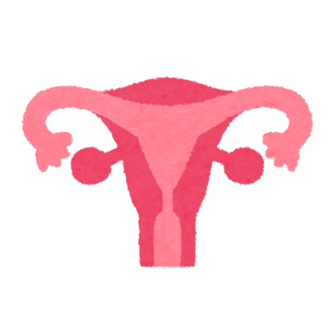

- 피임이란?
- 마거릿 생어
- 피임법 종류
- 피임 관련 정보
- 세계 피임 운동
피임법 종류
나에게 맞는 피임법을 찾아보자! (영문 사이트) : https://tools.plannedparenthood.org/bc/birth_control_quiz

출처 : なんでないの 홈페이지
- STI : 성병(sexually transmitted infection)
- STD : 성병 (sexually transmitted disease)
- 저용량 알약
성공률 91% STI X
알약은 호르몬을 포함하고 있는 약으로, 매일 복용해야 한다. 여러 가지 종류가 있고, 안전하고, 저렴하다. 매일 정해진 시간에 복용하면 효과도 더욱 높아진다. 알약은 피임뿐만 아니라 다른 여러 가지 효과가 기대받고 있다.
- 콘돔
성공률 79% STI O
질용 콘돔은 페니스용과 그다지 다르지 않다. 임신과 성병 예방에 높은 효과를 발휘. 임신 예방에서는 질에, STD 예방에는 질 뿐만 아니라 항문에도 사용이 가능하다.
- IUD(Intrauterine Device, 자궁 내 장치) IUS (Intrauterine System, 자궁 내 시스템)
성공률 99 % STI X
IUD는 매우 작은 기구. 자궁에 삽입해 임신을 방지한다. 사용 가능 기간이 길고 (5 - 10 년) 중간에 멈추는 것도 ok! 가장 확실한 피임법의 하나다.
- 피임 주사
성공률 94% STI X
피임 주사는 3개월마다 접종해야 한다. 안전하고 편리해서 피임을 하고 있다는 사생활도 지킬 수 있는 타입의 피임법이다. 정기적으로 접종하면 성공률이 더 높아진다.
- 피임 임플란트
성공률 99 % STI X
피임 임플란트는 성냥 정도의 크기이고, 임신 방지 호르몬을 낸다. 병원에서 팔에 넣는 것만으로 OK. 한 번 넣으면 4 년간 피임이 가능하다.
- 피임 링
성공률 91 % STI X
피임 링은 안전하고 사용법이 간단하고 저렴한 피임법으로 질에 넣어 사용한다. 작고 부드러운 링이 호르몬을 방출하여 피임을 가능하게 해준다. 3 주마다 교환하고 제대로 사용하면 피임 효과가 더욱 높아진다.
- 피임 다이어프램
성공률 88 % STD X
다이어프램은 질에 넣어 사용한다. 얇고 부드러운 컵이다. 성관계 시 자궁 경부를 덮어 임신을 방지한다.
- 살정제 (살정자제계)
성공률 71 % STD X
살정제는 정자가 난자에 도착하는 것을 방해는 약을 사용한 피임 방법이다. 성행위 전에 질에 삽입하여 임신을 방지한다. 거품, 젤, 필름, 스펀지 등 다양한 종류가 있어, 다이어프램 등과 함께 사용하면 효과적이다. 호르몬제가 몸에 맞지 않을 경우에도 사용 가능
※ 일본에서는 발포제만 존재
- 피임씰(스티커)
성공률 91 % STD X
피임 씰은 안전하고 사용법이 간단하고 저렴한 방법 중 하나이다. 복부, 팔, 엉덩이, 허리에 임신을 방지하는 호르몬이 나오는 스티커를 부착하는 것만으로도 피임이 가능하다. 1~3주 사용한 후 교환하고, 1주의 공백기를 가지고 사용해야 한다.